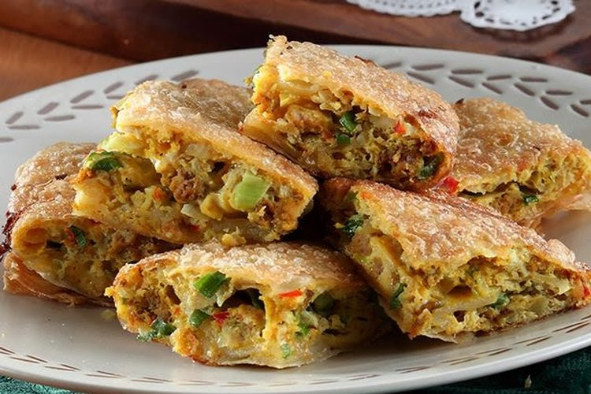

Resep Martabak telur
Ilustrasi martabak telur (Dok. Sajian Sedap)
Penulis : Silvita Agmasari|
Editor : Silvita Agmasari
Martabak identik sebagai camilan malam di Indonesia. Selain martabak manis, beberapa penjual martabak juga menjual martabak telur.
Martabak telur yang dijual malam hari berbeda dengan martabak telur jajanan pasar. Sebab kulit martabak telur harus dibikin sendiri.
Sementara martabak telur jajanan pasar kulitnya kebanyakan dari kulit lumpia.
Berikut resep martabak telur dari sajian sedap, kamu bisa masak menggunakan teflon di rumah.
Bahan-bahan Martabak telur
- 200 gram tepung terigu protein tinggi
- 1/4 sendok teh garam
- 140 ml air
- 30 gram minyak goreng
- 500 ml minyak goreng untuk merendam
- 500 ml minyak untuk menggoreng
- 500 gram daging giling
- 100 gram ayam giling
- 3 siung bawang putih, iris tipis
- 6 butir bawang merah, iris tipis
- 2 buah cabai merah, cincang halus
- 2 sendok teh kari bubuk
- 1 sendok teh garam
- 1/4 sendok teh merica bubuk
- 1/2 sendok teh gula pasir
- 1 batang daun bawang, diiris halus
- 1 sendok makan minyak untuk menumis
- 25 gram daun bawang, iris halus
- 1 butir telur bebek, kocok lepas
- 1 butir telur ayam, kocok lepas
- 1/2 buah (50 gram) bawang bombay, cicang halus
- 1/4 sendok teh garam
- 1/8 sendok teh merica bubuk
- 50 gram bahan tumisan daging
bahan kulit:
bahan isian:
Bahan campuran per porsi (aduk rata):
Tahap pembuatan Martabak telur
- Buat kulit martabak terlebih dahulu, campur tepung terigu dan garam. Tuang air sedikit demi sedikit sambil diuleni sampai kalis. Tambahkan minyak goreng. Uleni sampai elastis.
- Timbang masing-masing 75 gram. Bulatkan. rendam dalam minyak goreng selama dua jam.
- Buat isian martabak, tumis bawang putih, bawang merah, dan cabai merah sampai harum. Tambahkan daging giling dan ayam giling. Aduk sampai berubah warna.
- Masukkan kari bubuk, garam, merica bubuk, dan gula pasir. Aduk sampai meresap. Tambahkan daun bawang. Aduk rata. Sisihkan.
- Pipihkan kulit dan giling tipis. Sisihkan.
- Panaskan minyak dalam teflon. Letakkan selembar kulit. Beri campuran isi. Lipat. Goreng dengan sedikit minyak (jangan sampai terendam) sambil disiram-siram minyak sampai matang.